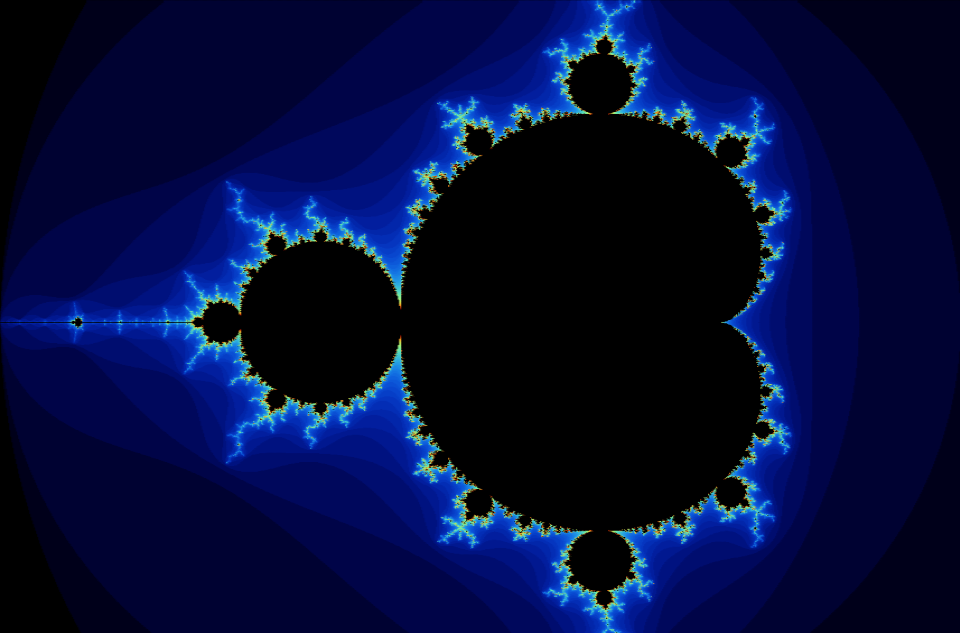

Here I document my maths and cs project
Fractals have always fascinated, you can explore them for hours and not even uncover a fraction of their patterns.
 Here is a render of the Mandelbrot set drawn with a project I wrote. It generated based on the equation: $$ z_{n+1} = z_n^2 + c $$ I find it crazy that such a simple formula can produce such patterns. Did you know, unlike most shapes, fractals don't exist only in 2 or 3 dimensions but exist in any number of dimensions? For example, the Koch snowflake has a Hausdorff dimension of \( \log_3(4) \approx 1.26 \).
Click here to check out my program for explore the Mandelbrot set.